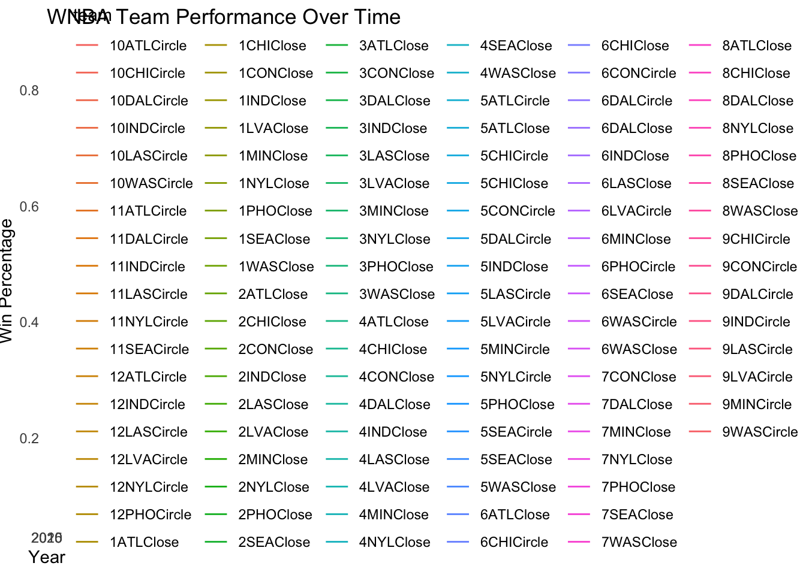

library(rvest)
#| eval: false
page <- read_html("/Users/berniceabanda/git/songkick_page.html")DS002R - HW 7 - Web scraping
due Tuesday, November 12, 2024
Q1 SongKick
Scrape the list of top 200 artists from https://www.songkick.com/leaderboards/popular_artists. (SongKick is a website designed to track artists and their live tour dates.)
Don’t forget to change #| eval: false to #| eval: true so that your code will run (after you’ve filled in the blanks).
- Read the html page
- Scrape the artists
artists <- page |>
html_elements(".name strong") |>
html_text()- Scrape the number of fans
library(stringr)
library(rvest)
library(httr)
fans <- page |>
html_elements(".leaderboard-list-item .count") |>
html_text() |>
str_extract("\\d+") |>
str_remove_all(",") |>
as.numeric() - Scrape the number of concerts
concerts <- page |>
html_elements(".leaderboard-list-item .count + .count") |>
html_text() |>
str_extract("\\d+") |>
as.numeric() - Put it all in a data frame
songkick_top_200 <- tibble(
artist = artists,
fan = fans,
concert = concerts
) - Add the rank associated with each artist. Print the first few row of the tibble.
songkick_top_200 <- songkick_top_200 |>
mutate(rank = 0:nrow(songkick_top_200)) |>
relocate(rank) Q2 WNBA
Consider the data on WNBA standings for the last 15 years provided at https://www.wnba.com/standings.
- Go to the WNBA standings website and scrape the standings table. (Note that the
html_table()function returns a list of tables, even though there is only one table. To get the first table (one out of one), you’ll needhtml_table() |> pluck(1)whose output should be a tibble.) Print the first few row of the tibble.
library(rvest)
library(tibble)
library(purrr)
library(ggplot2)
wnba_page <- read_html("https://www.wnba.com/standings")
wnba_standings <- wnba_page |>
html_table() |>
pluck(1)
head(wnba_standings)# A tibble: 6 × 10
TEAM W L PCT GB CONF HOME ROAD STREAK `L-10`
<chr> <int> <int> <dbl> <chr> <chr> <chr> <chr> <chr> <chr>
1 1NYLClose 32 8 0.8 -- 16-4 16-4 16-4 L1 7-3
2 2MINClose 30 10 0.75 2 14-6 16-4 14-6 L1 8-2
3 3CONClose 28 12 0.7 4 14-6 14-6 14-6 W1 6-4
4 4LVAClose 27 13 0.675 5 12-8 13-7 14-6 W5 9-1
5 5SEAClose 25 15 0.625 7 13-7 14-6 11-9 W1 6-4
6 6INDClose 20 20 0.5 12 11-9 12-8 8-12 L1 6-4 print(wnba_standings) # A tibble: 12 × 10
TEAM W L PCT GB CONF HOME ROAD STREAK `L-10`
<chr> <int> <int> <dbl> <chr> <chr> <chr> <chr> <chr> <chr>
1 1NYLClose 32 8 0.8 -- 16-4 16-4 16-4 L1 7-3
2 2MINClose 30 10 0.75 2 14-6 16-4 14-6 L1 8-2
3 3CONClose 28 12 0.7 4 14-6 14-6 14-6 W1 6-4
4 4LVAClose 27 13 0.675 5 12-8 13-7 14-6 W5 9-1
5 5SEAClose 25 15 0.625 7 13-7 14-6 11-9 W1 6-4
6 6INDClose 20 20 0.5 12 11-9 12-8 8-12 L1 6-4
7 7PHOClose 19 21 0.475 13 10-10 10-10 9-11 L1 3-7
8 8ATLClose 15 25 0.375 17 7-13 8-12 7-13 W3 5-5
9 9WASCircle 14 26 0.35 18 7-13 5-15 9-11 W1 6-4
10 10CHICircle 13 27 0.325 19 5-15 6-14 7-13 L5 2-8
11 11DALCircle 9 31 0.225 23 6-14 7-13 2-18 L9 1-9
12 12LASCircle 8 32 0.2 24 5-15 5-15 3-17 W1 2-8 - Clean up the
TEAMvariable so that it has two columns: first is the finalrank, second is the three digitteamcode for each team. Print the first few row of the tibble.
wnba_standings <- wnba_standings |>
separate(TEAM, into = c("rank", "team"), sep = " ", extra = "merge")
head(wnba_standings)# A tibble: 6 × 11
rank team W L PCT GB CONF HOME ROAD STREAK `L-10`
<chr> <chr> <int> <int> <dbl> <chr> <chr> <chr> <chr> <chr> <chr>
1 1NYLClose <NA> 32 8 0.8 -- 16-4 16-4 16-4 L1 7-3
2 2MINClose <NA> 30 10 0.75 2 14-6 16-4 14-6 L1 8-2
3 3CONClose <NA> 28 12 0.7 4 14-6 14-6 14-6 W1 6-4
4 4LVAClose <NA> 27 13 0.675 5 12-8 13-7 14-6 W5 9-1
5 5SEAClose <NA> 25 15 0.625 7 13-7 14-6 11-9 W1 6-4
6 6INDClose <NA> 20 20 0.5 12 11-9 12-8 8-12 L1 6-4 - Do the same thing for the 2014 season. Print the first few row of the tibble.
# Filter for 2014 season data
standings_2014 <- read_html("https://www.wnba.com/standings/?season=2014") |>
html_table() |>
pluck(1)
#Clean up the variables
standings_2014 <- standings_2014 |>
mutate(
rank = str_extract(TEAM, "^\\d+"),
team = str_remove(TEAM, "^\\d+\\s"),
TEAM = NULL
)
# Print the first few rows of the tibble
print(standings_2014) # A tibble: 12 × 11
W L PCT GB CONF HOME ROAD STREAK `L-10` rank team
<int> <int> <dbl> <chr> <chr> <chr> <chr> <chr> <chr> <chr> <chr>
1 29 5 0.853 -- 19-3 16-1 13-4 W2 8-2 1 1PHOClose
2 19 15 0.559 -- 11-11 13-4 6-11 L1 4-6 1 1ATLClose
3 16 18 0.471 -- 12-10 7-10 9-8 L1 5-5 2 2INDClose
4 25 9 0.735 -- 15-7 15-2 10-7 W1 7-3 2 2MINClose
5 16 18 0.471 -- 9-13 8-9 8-9 W3 4-6 3 3LVAClose
6 16 18 0.471 -- 11-11 8-9 8-9 L1 5-5 3 3WASClose
7 16 18 0.471 -- 9-13 7-10 9-8 L1 6-4 4 4LASClose
8 15 19 0.441 -- 14-8 9-8 6-11 L2 5-5 4 4CHIClose
9 15 19 0.441 -- 10-12 10-7 5-12 W2 5-5 5 5NYLCircle
10 12 22 0.353 -- 7-15 8-9 4-13 L2 3-7 5 5SEACircle
11 12 22 0.353 -- 7-15 8-9 4-13 L3 4-6 6 6DALCircle
12 13 21 0.382 -- 8-14 9-8 4-13 W1 3-7 6 6CONCircle- Write a function whose only argument is year and scrapes the standings for that year. The year argument should be a column in the output data frame. (That is, the function result is a dataframe with columns:
rank,team,W,L, …L-10,year. Remove theTEAMcolumn after you’ve used it to createrankandteamvariables.) Print the first few row of the tibble.
library(rvest)
library(dplyr)
library(tidyr)
library(purrr)
# function to scrape the standings for a given year
scrape_standings <- function(year) {
standings <- read_html(paste0("https://www.wnba.com/standings/?season=", year)) |>
html_table() |>
pluck(1)
standings <- standings |>
mutate(
rank = str_extract(TEAM, "^\\d+"),
team = str_remove(TEAM, "^\\d+\\s"),
TEAM = NULL,
year = year
)
return(standings)
} - Use
map()to scrape all the team data between 2010 and 2024. Print the first few row of the tibble.
library(rvest)
library(dplyr)
library(tidyr)
library(purrr)
years <- 2010:2024
standings_all <- map(years, scrape_standings) |>
list_rbind()
# Print the first few rows of the tibble
print(standings_all) # A tibble: 180 × 12
W L PCT GB CONF HOME ROAD STREAK `L-10` rank team year
<int> <int> <dbl> <chr> <chr> <chr> <chr> <chr> <chr> <chr> <chr> <int>
1 22 12 0.647 -- 13-9 13-4 9-8 W6 8-2 1 1WASClose 2010
2 28 6 0.824 -- 20-2 17-0 11-6 W3 6-4 1 1SEAClose 2010
3 22 12 0.647 -- 14-8 13-4 9-8 W1 9-1 2 2NYLClose 2010
4 15 19 0.441 -- 13-9 9-8 6-11 L2 4-6 2 2PHOClose 2010
5 14 20 0.412 -- 11-11 8-9 6-11 W2 5-5 3 3LVAClose 2010
6 21 13 0.618 -- 13-9 12-5 9-8 L3 5-5 3 3INDClose 2010
7 13 21 0.382 -- 10-12 8-9 5-12 L1 5-5 4 4LASClose 2010
8 19 15 0.559 -- 10-12 10-7 9-8 L2 4-6 4 4ATLClose 2010
9 17 17 0.5 -- 9-13 12-5 5-12 L1 4-6 5 5CONCirc… 2010
10 13 21 0.382 -- 8-14 7-10 6-11 W1 5-5 5 5MINCirc… 2010
# ℹ 170 more rows- Using
ggplot(), create a line plot withyearon the x-axis andPCTon the y-axis. Color each line according to theteam. Do you see any trends of the teams over time?
library(ggplot2)
ggplot(standings_all, aes(x = year, y = PCT, color = team)) +
geom_line() +
labs(title = "WNBA Team Performance Over Time", x = "Year", y = "Win Percentage") +
theme_minimal()
Q3 Best places
Go to https://www.bestplaces.net and search for Claremont, California. The website is used for comparing cities to determine where you might want to work or live.
- Using the SelectorGadget, extract the following pieces of information from the Claremont page:
- property crime (just the number which is on a scale of 0 to 100)
- minimum income required for a single person to live comfortably (as a number)
- average monthly rent for a 2-bedroom apartment (as a number)
- the “about” paragraph (the very first paragraph above “Location Details”)
Print the first few row of the tibble.
# Load necessary libraries
library(rvest)
library(tibble)
library(stringr)
# Read the html page
page <- read_html("https://www.bestplaces.net/city/california/claremont")
# Scrape the property crime rate
crime_rate <- page |>
html_elements(".crime_rate") |>
html_text() |>
str_extract("\\d+") |>
as.numeric()
# Scrape the minimum income required for a single person to live comfortably
min_income <- page |>
html_elements(".min_income") |>
html_text() |>
str_extract("\\d+") |>
as.numeric()
# Scrape the average monthly rent for a 2-bedroom apartment
rent_2br <- page |>
html_elements(".rent_2br") |>
html_text() |>
str_extract("\\d+") |>
as.numeric()
# Scrape the "about" paragraph
about <- page |>
html_elements(".about") |>
html_text()
# Put it all in a data frame
best_places <- tibble(
state = "California",
city = "Claremont",
crime = crime_rate,
min_income_single = min_income,
rent_2br = rent_2br,
about = about
)
# Print the first few rows of the tibble
print(best_places) # A tibble: 0 × 6
# ℹ 6 variables: state <chr>, city <chr>, crime <dbl>, min_income_single <dbl>,
# rent_2br <dbl>, about <chr>- Write a function called
scrape_bestplaces()with arguments for city and state. When you run, for examplescrape_bestplaces("california", "claremont"), the output should be a 1x6 tibble with columns forstate,city,crime,min_income_single,rent_2br, andabout.
scrape_bestplaces <- function(state, city) {
page <- read_html(paste0("https://www.bestplaces.net/city/", state, "/", city))
crime <- page |>
html_element(".crime-index .value") |>
html_text() |>
as.numeric()
min_income <- page |>
html_element(".income-index .value") |>
html_text() |>
str_remove_all("[^0-9]") |>
as.numeric()
rent <- page |>
html_element(".rent-index .value") |>
html_text() |>
str_remove_all("[^0-9]") |>
as.numeric()
about <- page |>
html_element(".about p") |>
html_text()
tibble(
state = state,
city = city,
crime = crime,
min_income_single = min_income,
rent_2br = rent,
about = about
)
}- Using
map2(), create a 5 x 6 tibble by running scrape_bestplaces() 5 times with 5 cities you are interested in. Be sure you look at the URL at bestplaces.net for the various cities to make sure it works as you expect. Print the first few row of the tibble.
Running the map2() function will look something like this:
states <- c("california", "new-york", "texas", "florida", "oregon")
cities <- c("claremont", "new-york-city", "austin", "miami", "portland")
city_data <- map2(states, cities, scrape_bestplaces) |>
list_rbind()
head(city_data)# A tibble: 5 × 6
state city crime min_income_single rent_2br about
<chr> <chr> <dbl> <dbl> <dbl> <chr>
1 california claremont NA NA NA <NA>
2 new-york new-york-city NA NA NA <NA>
3 texas austin NA NA NA <NA>
4 florida miami NA NA NA <NA>
5 oregon portland NA NA NA <NA> Q4 Permission
Check to make sure we are allowed to scrape data from the three websites: songkick, wnba, and bestplaces.